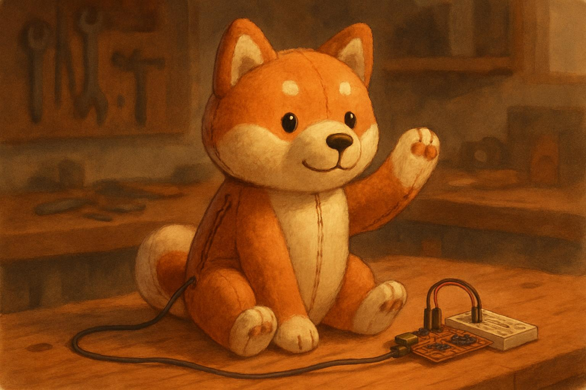
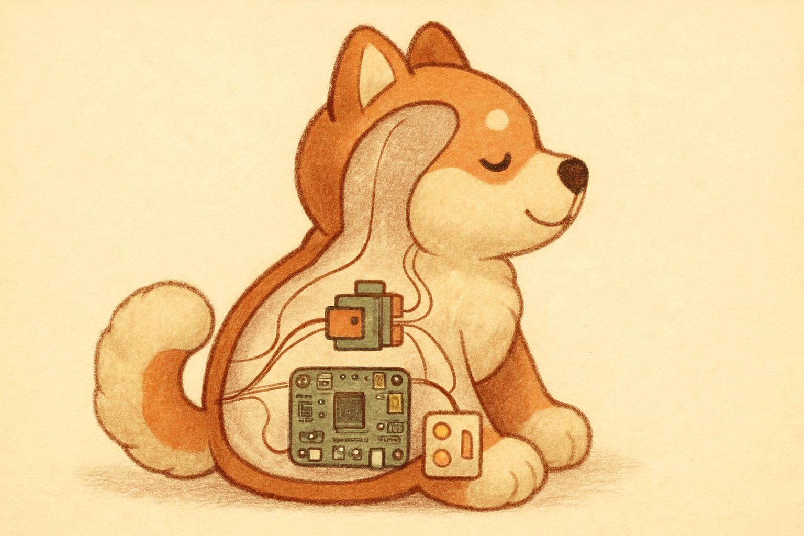
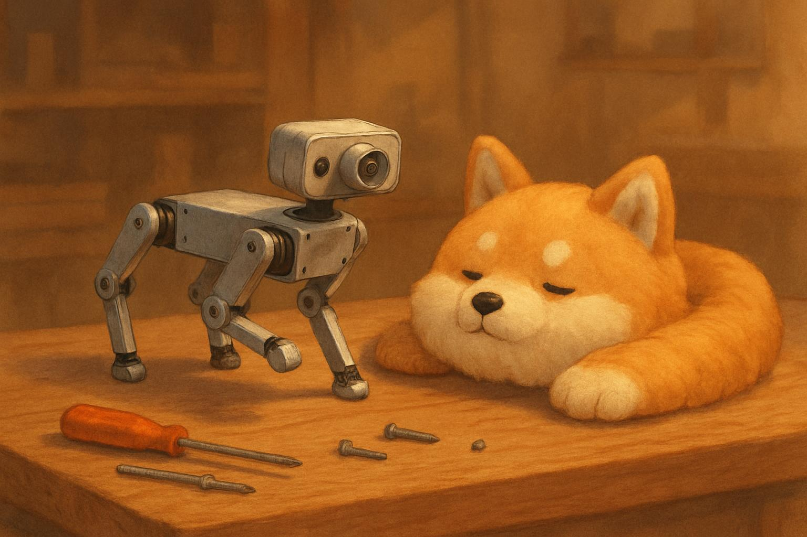
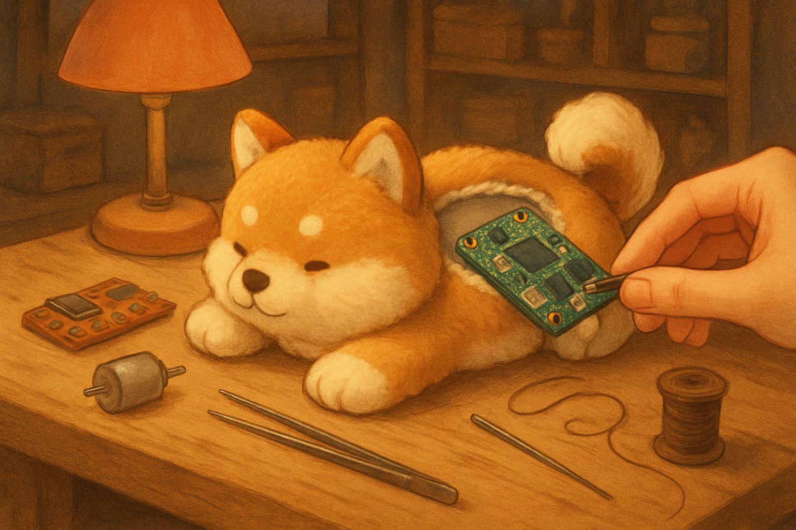

案A「まめしば1号」= ぬいぐるみにゼロから仕込む自作路線。案B「メカしば1号」= 市販ロボ犬キット PiDog を骨格にする路線。案C「ドナーしば1号」= 市販の「動くぬいぐるみ」に脳を移植する路線（7/25夜・けいと発案）。どれも最終ゴール（見守り×しつけぬいぐるみ）への道はつながってる。違うのは順番と速度とさわり心地。
結論から: 速度と確実性を買うならB、物語と外装を先に取るならA、子供が触れる柔らかさを最優先で「動くかわいさ」も早く欲しいならC。
| 観点 | 🧸 案A まめしば1号（自作） | 🤖 案B メカしば1号（PiDog） | 🧸⚙️ 案C ドナーしば1号（動くぬい改造） |
|---|---|---|---|
| 初期費用（Pi込み） | 約 1.8〜2.3万円 | 約 3.9〜4.2万円 | 約 2.0〜2.6万円（ドナー次第） |
| 7/26中に「お手」が動く | 🟡 五分五分 骨格の剛性しだい | ✅ ほぼ確実 組立4〜6h＋Python数行 | 🟡 開けてみるまで不明 尻尾/口の乗っ取りは半日で現実的。お手はサーボ追加（Aと同じ） |
| なで検知の検証 | ✅ ぬい形態で検証できる（導電布を自分で仕込む） | ✅ 頭にタッチセンサ標準（メカの頭。布越し感度は別途） | ✅ ドナーのセンサー流用＋ダメならMPR121に置換（保険あり） |
| 子供が触れる柔らかさ | ◎ ぬいぐるみそのもの | △ アルミ骨格むき出し | ◎ 市販ぬいぐるみ品質そのまま |
| かわいさ・外装 | ◎ 自作の仕上げ次第 | △ ファー外装は8月の宿題 | ◎ 買った瞬間から製品品質＋既に動く |
| 審査での物語性 | ◎「手作り統合」の勝ちパターン直撃 | ○ 学習×統合×外装は自作の物語にできる | ○「おもちゃに本物の知能を移植する手術」はデモ映えするネタ。自作度はAに劣る |
| 拡張性 | 追加は全部自作 | ◎ 12関節・歩行・カメラまで標準 | △ ドナー機構依存。DCモーターは角度制御不可（ON/OFF/速さのみ） |
| 主なリスク | 骨格剛性・工数爆発・「動かない」まま日没 | 「既製品では」の批評・見た目の冷たさ | 分解は不可逆・中身は開けるまで謎（溶着・特殊ネジ・基板一体型の可能性） |
| Solist-AI との接続 | どれも同じ ✅ — センサCSV→Sim/elmkit、実機はUART/SPIで連携（外部コンピュート併用はFAQ明記でOK） | ||

完成予想図（AI生成コンセプトアート）— 座り柴犬がお手。ケーブル1本だけお尻から出て開発ボードへ
30cm級の座り柴犬に仕込む配置。背中の縫い目を開けてファスナー化し、そこから全部出し入れする。
| # | 部品 | 役割・選定理由 |
|---|---|---|
| ① | 加速度センサ KXTJ3-1057 | ROHM公式サンプルと同一センサー。頭に入れて なでる/たたく/抱っこ の動きを拾う。Solist-AI実機に載せ替えるときデータがそのまま使える |
| ② | 導電布パッチ + MPR121 | 「やさしくなでる」は加速度だけでは取れない（調査済み）→ 静電容量タッチが本命。頭〜背中に導電布 or アルミテープを縫い込み、MPR121（I2C・12ch）で読む |
| ③ | お手サーボ MG90S | 右肩に固定。メタルギア・トルク2.2kg·cmで腕上げに必要十分（SG90だと荷が重い、も調査済み）。腕の芯は竹ひご or アルミ自在ワイヤ |
| ④ | PCA9685 サーボドライバ | I2CでPiから16chサーボ制御の定番。サーボ電源をPiから分離できるのが最大の役目（ブラウンアウト防止） |
| ⑤ | Raspberry Pi 4 (4GB) | 頭脳。Python + ServoKitで数行制御。後段のMaAI（相槌AI）実験もこの子の上（うちの調査でバッテリー運用はPi 5よりPi 4推奨） |
| ⑥ | 電池ボックス 単3×4 | サーボ専用電源（4.8〜6V）。Pi本体はモバイルバッテリー。GNDは共通に |
| ⑦ | 尻尾サーボ SG90 | 喜び表現。負荷が軽いので最安サーボでOK。「なでたら尻尾を振る」がE2Eデモの画になる |
| ⑧ | USBマイク + スピーカー | マイクはUSB小型（PiにADCが無いのでアナログマイクは不可）。スピーカーはPiの3.5mm→PAM8403アンプ経由。鳴き声のご褒美応答用 |

内部イメージ（AI生成）— 綿は半分抜いて、基板は綿でくるんで防振
※ 加速度センサ・MPR121・マイク等は案B/Cと共通なので「共通の買い物」へ。工具は工具リストで夜のうちにチェック。

コンセプトイメージ（AI生成・実物写真は下の商品リンクで）— 骨格は既製、外装＝柴犬の「着ぐるみ」は8月に自作
SunFounder製のRaspberry Pi 駆動・四足歩行ロボット犬キット。組み立て式（はんだ付け不要・工具同梱）で、全関節・全センサーをPythonライブラリから直接制御できる。日本語ドキュメント・組立動画あり。
| 項目 | 内容 |
|---|---|
| 価格 | ¥28,226（Amazon・2026年7月時点、変動あり）＋ Raspberry Pi 別売（明日秋月で購入） |
| サーボ | メタルギア×12（脚8＋首など）。バラ買いしたら12個で1万円超 → 骨格・基板込み2.8万は割高ではない |
| センサー | 頭にタッチセンサ（なで検知に直結！）・6軸IMU（加速度+ジャイロ）・カメラ・超音波距離・音源方向 |
| 音まわり | スピーカー内蔵。音声認識用マイクは別売りUSBマイクが必要（共通の買い物に入れてある） |
| 電源 | バッテリー同梱（18650×2・USB-C充電）。この価格帯では珍しい |
| 組立時間 | レビュー実測 約4〜6時間。脚サーボの角度合わせ（キャリブレーション）が一番の山 |
| できる動き | 歩行・お座り・伏せ・ストレッチ等のプリセット多数 ＋ 関節を1個ずつPythonで直接制御＝お手は自由に作れる |
※ ラズパイ・microSD・センサ類は「共通の買い物」にまとめた（案Bでも全部使う）。

コンセプトイメージ（AI生成）— ぬいぐるみ病院みたいに、やさしく「脳移植手術」
市販の「動くぬいぐるみ」（数千円〜）をドナーに買い、中の制御基板だけ取り出して Raspberry Pi に載せ替える。ふわふわの外装・モーター・（製品によっては）タッチセンサー・スピーカーはそのまま使う。Bの「子供が触るにはメカメカしい」問題を最初から解決しつつ、Aで一番時間がかかる「動く機構づくり」をショートカットする。
評価軸: 明日7/26までの入手性 × 子供が触れる柔らかさ × 改造情報の量 × センサー/モーター流用価値 × 価格。価格・在庫は7/25夜時点（Amazonの「明日着」は今夜カート画面で要目視確認）。
| # | 候補 | 実売 | 動く / センサー | 今夜の入手ルート | 所感 |
|---|---|---|---|---|---|
| 🥇 | とことこおさんぽ 柴犬ちゃん マザーガーデン |
¥4,500 | とことこ歩行+尻尾フリフリ+鳴き声 ／ 音+振動で起動（タッチ無し→MPR121追加） | Amazon B01JINCJYO「明日7/26お届け」表示あり | 柴犬100%・★4.3(409件)・「ガシガシ噛んでも壊れなさそう」と耐久評価高。シリーズ累計15.5万個の定番。唯一「明日着・柔らかい・柴犬・音反応・耐久」が全部揃う機体本命 |
| 🥈 | Hug & Touch あまえんぼスパニエル イワヤ（1923年創業・STマーク） |
¥4,466〜 | 歩行+首振り ／ 頭タッチ「まて」+抱っこ検知+背中なで検知＝候補中最良（機械式スイッチ系→GPIO直結流用が狙える） | Amazon（ポメ版）／明朝ヨドバシAkiba 6F（開店前に 03-5209-1010 で在庫確認） | センサー流用の本命。イワヤ犬はおもちゃ病院の分解図・修理PDFが候補中最多（電池ボックス布をドライヤーで温めて剥がす定石あり）。弱点: 犬種がキャバリアで柴犬度低 |
| 🥉 | ピッコリーネ 秋田犬 イワヤ |
¥1,718 | 尻尾ふり歩行+ふせ+鳴き ／ センサー無し | Amazon B0D78GR2RR「明日着」表示あり | ¥1,718の分解練習機・失敗保険。秋田犬で柴っぽさあり。小型でフルサイズPi不可（Pi Zero向き）・「壊れやすい」レビュー多いがドナーなら許容 |
| 4 | 甘噛みハムハム シバイヌ・コタロウ ユカイ工学 × りぶはあと |
¥4,620〜5,830 | 口はむはむ（1軸・サーボ駆動）／ 口内の指検知のみ | Amazonカートで7/26着を要確認／ヨドバシ.com掲載あり。定価¥5,830超えの出品は転売 | 柴犬度・ぬい品質は候補中最高。ただし⚠️訂正: 分解事例は日英ともゼロ+公式FAQ「モジュール取り出し不可」＝縫い込みで難易度高め。公式在庫切れ＝供給縮小の兆候、買うなら今夜 |
| 5 | FurReal お散歩わんちゃん ハズブロ F1544 |
¥5,000 | 歩行（1モーター+カム）／ ボタン系 | Amazon（「正規品」+Amazon発送のみ選ぶ） | 海外分解情報が世界一豊富（FCCデータベースに内部写真一式・RasPi化の前例あり）。見た目がおもちゃっぽく、機構研究・保険枠 |
| 6 | なでなでクルンっ! ラッコ ハピネット |
¥2,409 | 丸まり1軸 ／ 頭・鼻・お腹のタッチ3点 | Amazonカートで要確認 | 部品取り枠: ¥2,409でタッチセンサー3点+モーター。🥇柴犬ちゃん（タッチ無し）にセンサー移植する組み合わせ要員。犬ではないので機体には不可 |
A/B/Cが今夜決まらなくても、これだけ買えば明日は前進できる安全設計。ぜんぶ秋月+周辺で揃う。目安 ¥14,000〜16,500。
Q1. 明日の夜、「動いた！」の動画が撮れていることをどれだけ重視する？
確実性の順は B（ほぼ確実）＞ C（尻尾/口の乗っ取りは半日で現実的・ただし開けるまで不明）＞ A（骨格しだいで五分五分）。歴代の勝ち筋は「実動デモ」なので、早く動くものがあると以後の全実験が加速するのは事実。Cは「動く+かわいい」を同時に撮れる唯一の案。
Q2. 予算感は？（安い順: A ≦ C ＜ B）
A 約1.8〜2.3万 ／ C 約2.0〜2.6万（ドナー¥1,718〜5,830）／ B 約3.9〜4.2万。Bの2.8万は12サーボ+全センサー+骨格込みでバラ買い換算では損していないが、「子供が触れる」を審査デモの核にするなら、その2.8万でドナー3台+駆動系がお釣り付きで買える。
Q3. 「かわいさ」をいつ作る？
A = 自作でかわいくする（機構が遅れる）。B = かわいさは8月の着ぐるみ勝負に後回し。C = 買った瞬間から製品品質のかわいさ+既に動く。ただし最終作品では外装の自作化 or 「ドナー改造」明記が必要なので、どれを選んでも縫製・外装のスキルは最終的に必要——ここは逃げられない。
当初はB推し → けいとの「子供が触るにはメカメカしい」は審査デモの核心を突いてる（体験型デモ＝子供やロームの人が実際に抱ける・なでられることが勝ち筋）のでCへ改訂 → さらに5角度並列調査の結果で構成を確定: 機体=🥇マザーガーデン柴犬ちゃん（¥4,500・明日着・柴犬・耐久◎）に案Aの電装（MPR121なで+KXTJ3+MG90Sお手）を移植。予算が許せば🥈あまえんぼスパニエル（なで/抱っこセンサー流用+分解情報最多）と🥉ピッコリーネ（¥1,718の開腹練習機）も同時ポチ — 3台全部でもPiDogの4割以下。当初推してたハムハムは調査で「分解事例ゼロ+縫い込み構造」と判明し4位に後退（柴犬愛で選ぶならアリ・ただし今夜中に）。Bは動きの豊かさが必要になったら買い足す開発機に格下げ——最終判断は二人で。